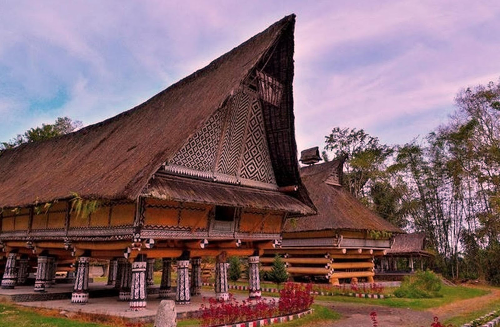
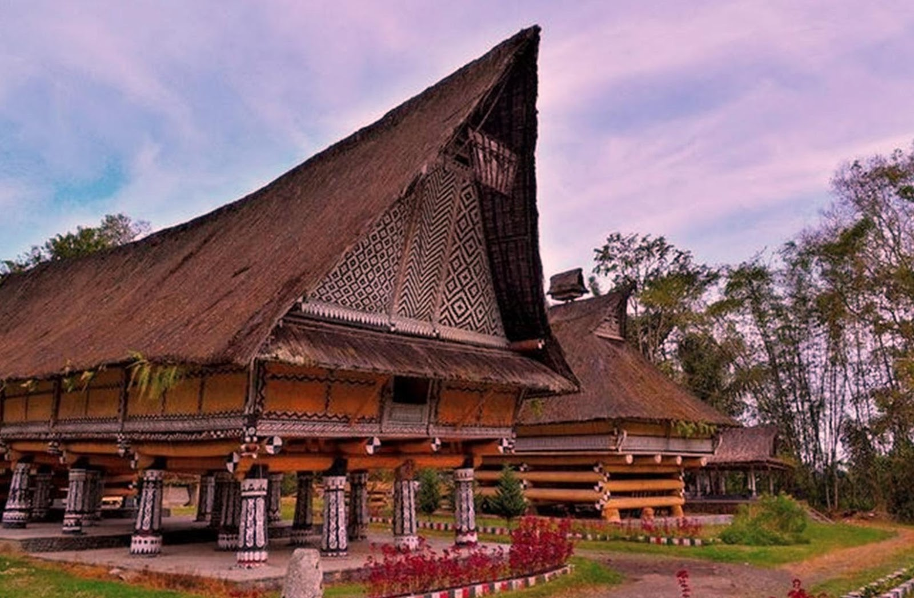

Rumah Bolon
 

Suku ini memiliki rumah adat yang bernama Rumah Bolon. Meski bernama sama seperti rumah adat suku Batak Toba, tetapi arsitektur rumah adat ini berbeda.Rumah Adat Batak Simalungun memiliki arsitektur yang unik, berbentuk rumah panggung dan dibangun menggunakan bahan-bahan bangunan yang terdiri dari kayu dengan tiang-tiang yang besar dan kokoh. Dindingnya dari papan atau tepas.Lantainya juga dari papan, sedangkan atapnya terbuat dari ijuk atau daun rumbia. Rumah adat ini juga tidak menggunakan paku, tapi diikat kuat dengan menggunakan tali.Rumah Adat Batak Simalungun memiliki kolong yang tingginya sekitar dua meter. Kolong tersebut biasanya dipergunakan untuk memelihara hewan, seperti babi, ayam, dan sebagainya. Oleh karena itu disediakan tangga untuk masuk ke dalam rumah.Pintu rumah ini memiliki kemiripan dengan rumah adat batak lainnya, yaitu pintu yang pendek sehingga tamu harus menunduk untuk masuk ke dalam rumah. Hal ini menandakan bahwa tamu harus menghormati pemilik rumah.
Ciri khas utama dari rumah adat ini terdapat pada bagian bawah atau kaki bangunan. Kaki bangunannya selalu berupa susunan kayu yang masih bulat-bulat atau gelondongan. Kayu-kayu tersebut menyilang dari sudut ke sudut. Ciri khas lainnya adalah bentuk atap pada anjungan yang diberi limasan berbentuk kepala kerbau lengkap dengan tanduknya.Salah satu tempat untuk melihat Rumah Adat Batak Simalungun adalah di Kota Pematang Siantar. Tepatnya di di Jalan Sudirman, Pematang Siantar. Di sini terdapat bangunan Museum Simalungun yang berbentuk Rumah Adat Simalungun.Bangunan rumah adat ini dibangun pada tanggal 10 April 1939 oleh Raja-Raja Simalungun, dan sampai saat ini masih berdiri kokoh. Traveler yang penasaran bisa mampir saat sedang liburan ke Pematang Siantar.
Rumah Adat Batak Simalungun yang saya kunjungi ini sebenarnya adalah Museum Simalungun. Tetapi bangunan museum tersebut berbentuk Rumah Adat Simalungun dan dibangun pada tanggal 10 April 1939 oleh Raja-Raja Simalungun. Tujuannya untuk menjaga benda-benda cagar budaya yang bernilai sejarah dan budaya agar tidak lenyap ditelan zaman. Jadi, saat berkunjung ke sini, kita bisa belajar mengenal sejarah, peninggalan, budaya dan arsitektur Adat Batak Simalungun. Istilahnya, sekali dayung dua pulau terlampaui.
Arsitektur
Rumah Adat Batak Simalungun yang saya kunjungi ini sebenarnya adalah Museum Simalungun. Tetapi bangunan museum tersebut berbentuk Rumah Adat Simalungun dan dibangun pada tanggal 10 April 1939 oleh Raja-Raja Simalungun. Tujuannya untuk menjaga benda-benda cagar budaya yang bernilai sejarah dan budaya agar tidak lenyap ditelan zaman. Jadi, saat berkunjung ke sini, kita bisa belajar mengenal sejarah, peninggalan, budaya dan arsitektur Adat Batak Simalungun. Istilahnya, sekali dayung dua pulau terlampaui.
Rumah adat ini dibangun menggunakan bahan-bahan bangunan yang terdiri dari kayu dengan tiang-tiang yang besar dan kokoh. Dindingnya dari papan atau tepas, lantainya juga dari papan sedangkan atap dari ijuk atau daun rumbiah. Rumah adat ini juga tidak menggunakan paku, tapi diikat kuat dengan tali. Walau tanpa paku, rumah ini tetap berdiri kokoh selama lebih dari setengah abad.
Rumah adat ini dibangun menggunakan bahan-bahan bangunan yang terdiri dari kayu dengan tiang-tiang yang besar dan kokoh. Dindingnya dari papan atau tepas, lantainya juga dari papan sedangkan atap dari ijuk atau daun rumbiah. Rumah adat ini juga tidak menggunakan paku, tapi diikat kuat dengan tali. Walau tanpa paku, rumah ini tetap berdiri kokoh selama lebih dari setengah abad